A step-by-step guide to recording bees in an arena, live or from video, and turning their tracks into distances, speeds, time in zones and contact with other bees.
bee-tracker.htmltools/walkthrough.py.Bee Tracker finds each bee's centre in every sample, follows each bee from sample to sample, and turns the tracks into measures of activity, place preference and contact between bees. It runs in the browser and uploads nothing.
| Column | What it means |
|---|---|
| Found | The share of samples in which the bee was detected. Below 80% the row is flagged: check detection. |
| Tracked s | Seconds of continuous track the other measures are based on. Gaps longer than 0.5 s are not counted. |
| Dist mm | Distance walked, from the smoothed track. |
| Speed mm/s, 95th | Mean walking speed over the tracked time, and the 95th percentile (a bee's fast walking speed). |
| Moving | The share of tracked time the bee moved faster than 3 mm/s (set under Results → Settings). |
| Zone columns | The share of tracked time inside each zone, with the number of visits in brackets. |
| Edge | Time inside the edge band you set: near the wall (thigmotaxis). |
| Nearest mm | Mean distance to the nearest other bee. Shown only with two or more bees. |
| Near bee | The share of time the bee was within 10 mm (centre to centre, about one bee length) of another bee. Shown only with two or more bees. |
| Encounters, Mean enc. s | How many separate times a bee was near another bee, and how long each lasted on average. |
| Crossings, Transit s | With linked arenas (zones marked Arena area): how often the bee moved from one arena to another, and the time spent between them. |
| Merges, Reacq. | How often bees touched and showed as one blob, and how often a lost bee was picked up again. Both are warnings that per-bee identity may have swapped. |
The setup matters more than any setting. A clean recording tracks well with the defaults; a poor one can't be fixed afterwards.
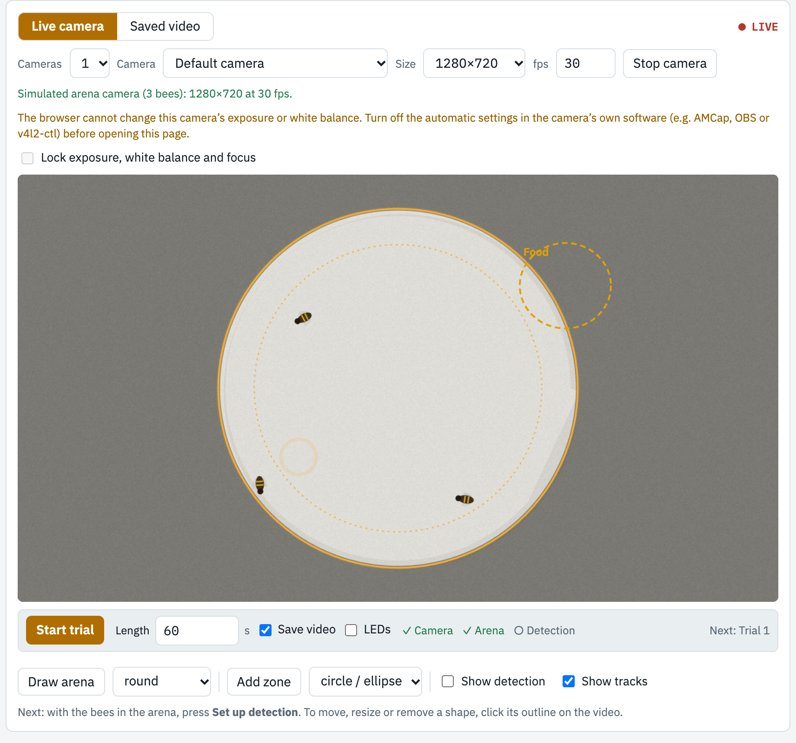
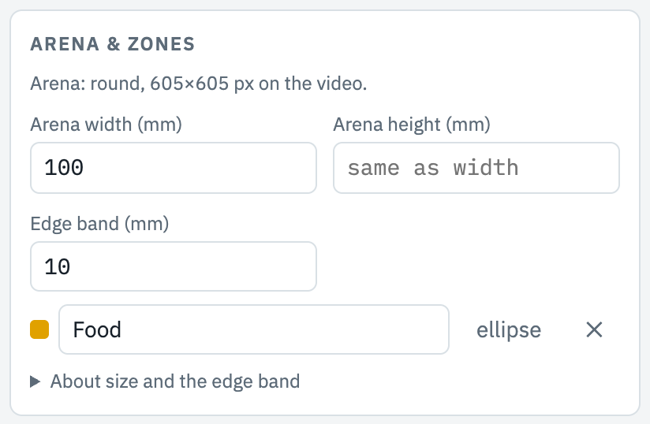
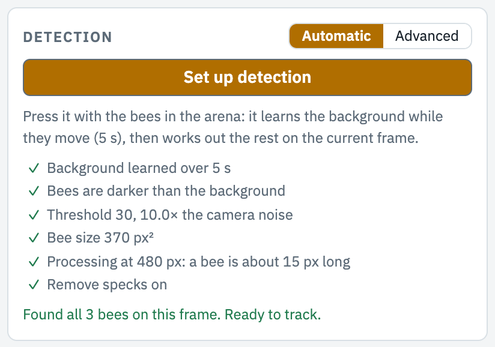
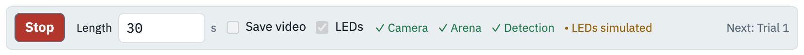
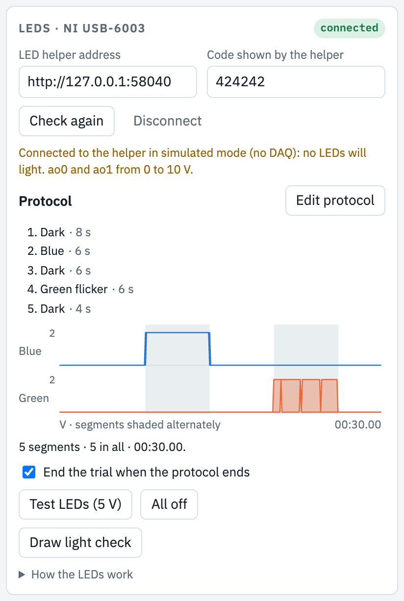
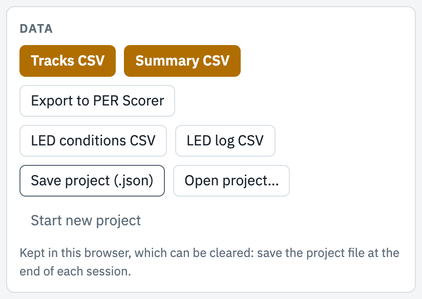
On the lab PC, start BeeTracker.exe: it opens the page in Chrome or Edge, already connected to the LEDs. Keep its small window open while you work. Elsewhere, open bee-tracker.html. At the top, type your initials, check the date, and name the experiment.
Choose Live camera, pick the camera and size, and press Start camera. Allow the camera if the browser asks. If the message under the camera says the frame rate is lower than asked for, choose a smaller size.
Choose round or rectangular, press Draw arena, and drag a box around the arena floor. On the Setup tab, type the arena's real width in mm (and height, if it isn't round or square), and set Bees in arena.
Press Add zone and drag a box. Click a zone's outline to select it: drag it, pull its handles to resize (hold Shift to keep a circle round), nudge it with the arrow keys, or type its name, centre and size in mm in the bar under the video. Duplicate makes an identical zone. An edge band in mm adds a zone along the wall.
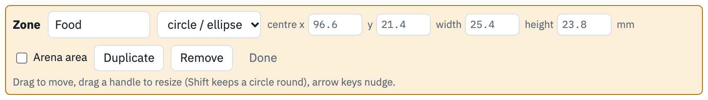
Put the bees in. On the Detect tab, press Set up detection. It learns the background while the bees move (10 s), then works out the rest. Wait for Found all 3 bees on this frame. Ready to track. The detected bees show in magenta. If it says something else, see Part 6.
See Part 7. Leave LEDs unticked in the trial bar to run without them.
In the trial bar, set the Length in seconds (leave it empty to run until you press Stop), tick Save video to keep a copy of the trial, and press Start trial. The video shows each bee's number and track, a red timer and a progress line. Keep the tab in front: browsers slow down hidden tabs.
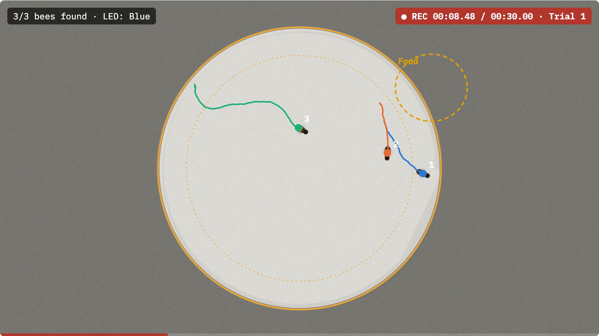
The results fill in when the trial ends (Part 8). Press Start trial again for the next one: each trial becomes its own recording, with the same arena, zones and settings. Give recordings a Group on the Setup tab to compare groups.
Use New recording for each video. It copies the arena, zones and settings, which suits a fixed camera.
Set Cameras to 2–4, choose a layout and a camera for each tile, and press Start camera: the cameras are joined into one image that works like one camera. Set each tile's zoom so 1 mm is the same size in every tile. For a bee that moves between arenas, draw the arena around the whole image, draw each real arena as a zone, select it and tick Arena area. The results then show Crossings, Transit s (time between arenas) and the first crossing; distances between bees count only bees in the same arena.
Bee Tracker compares each frame with a picture of the arena without bees (the background). Pixels that differ by more than the threshold are bee; joined pixels form a blob; blobs about the size of one bee are bees, and bigger blobs are bees touching. Set up detection chooses these for you:
| It chooses | How |
|---|---|
| Background | Live: the per-pixel median of frames over 10 s while the bees move. Saved video: the median of frames across the analysis range. |
| Darker or lighter | Whether the pixels that changed got darker or lighter than the background. |
| Threshold | Several times the camera's noise, then the middle of the range that finds exactly your number of bees. |
| Bee size | The median size of the blobs it found. Needed to split bees that touch. |
| Processing size | The smallest image size at which a bee is still at least 12 pixels long: faster, without losing accuracy. |
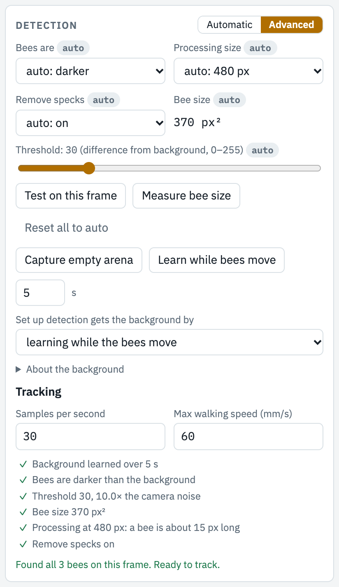
Every value it chose is here, tagged auto. Change one and it is tagged set by you: Set up detection keeps it from then on. Reset all to auto undoes that.
Capture empty arena gives the cleanest background: use it before the bees go in when you can, and choose it for Set up detection gets the background by.
Advanced also has the tracking settings: samples per second, the maximum walking speed (used to keep identities when bees are close), and, for saved video, how frames are read and the playback speed.
Show detection, under the video, shows the magenta mask live. Use it to check detection at any time.
| It says | What to do |
|---|---|
| Found more blobs than bees | Something else is moving or casting a shadow, or the background is off. Turn on Show detection to see what. Fix the light, or raise the threshold under Advanced. |
| Found fewer bees than you have | Bees touching count as one; try again when they're apart. A bee that sat still while the background was learned became part of it: use Capture empty arena. |
| No bees found | Are the bees in view and inside the arena outline? With learn while bees move, they must move during those 10 s. |
With the live camera, each trial can play a light protocol on the two outputs (ao0, ao1) of an NI USB-6003, through the LED helper on the same computer. The desktop app runs the helper and connects the page for you; the LEDs tab shows connected and the DAQ's name. Without NI's NI-DAQmx driver, the LEDs run in simulated mode: everything works, but no LEDs light, and the panel says why.
A protocol is a list of segments. Each has a length, a label, and what each LED does: off, a constant level, a ramp, an exponential, a sine, a pulse train, a single pulse, random levels, or a formula of time. The protocol can repeat, and the order can be shuffled within each repeat. The LEDs tab lists the segments; Edit protocol widens the panel to change them.
Each output (AO 0, AO 1) gives a voltage against the shared AO GND, so every circuit returns to AO GND. The outputs give only about 5 mA, so use an LED driver with an analog dimming input, for example a Mean Well LDD-H on a breadboard:
| Connect | To |
|---|---|
| 12 V supply + / − | The breadboard's red (+) and blue (−) rails |
| LDD-H +Vin / −Vin | Red rail / blue rail |
| LDD-H DIM | DAQ AO 0, and a 10 kΩ resistor to the blue rail (keeps the LED off if the DAQ is unplugged) |
| LDD-H +Vout / −Vout | The LED's + and − |
| DAQ AO GND | Blue rail (the shared ground) |
Check the pin order and DIM range in your driver's datasheet. The second LED is the same circuit on AO 1. Avoid drivers that dim with slow PWM: bees can see the flicker.
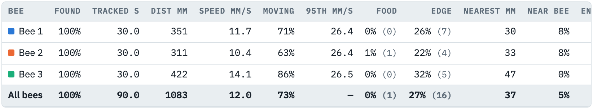
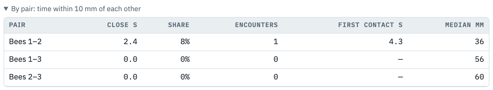
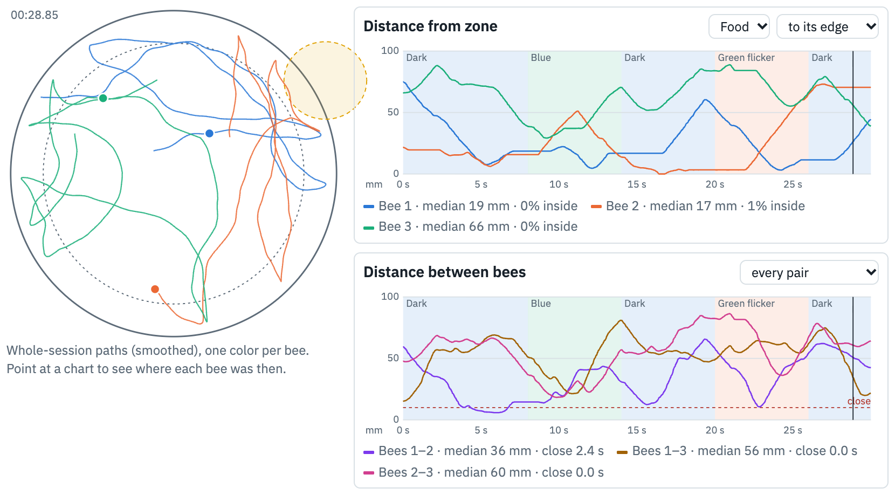
Compare recordings, the second results tab, plots any measure for every recording (or every bee) by group, with Mann–Whitney or Kruskal–Wallis p-values. They are exploratory: bees in one arena are not independent.
| Data tab | What you get |
|---|---|
| Tracks CSV | Every sample of every bee: time, position in px and mm, smoothed position, speed, in each zone, distance to each zone and to every other bee, the LED condition. |
| Summary CSV | One row per bee and an all row per recording, for every recording, with the settings used. |
| Export to PER Scorer | Moving, each zone and Near another bee as behaviors, to use PER Scorer's time budgets and plots. |
| LED CSVs | Measures per LED condition, and a log of every LED segment played. |
| Save project (.json) | Everything: settings, tracks and results. Open project… brings it back. |
| Problem | What to do |
|---|---|
| Tracking did not keep up with the camera | Lower the processing size or the samples per second under Detect → Advanced, or use a smaller camera size. |
| Bee found in less than 80% of samples | Detection is missing the bee: check with Show detection, and see Part 6. |
| "Settings changed after this trial" | The arena, bee count or detection changed since tracking. A saved video can be tracked again; a live trial keeps the settings it used. |
| Distances in px, not mm | Enter the arena's width in mm on the Setup tab. |
| LEDs say simulated | The panel says why: no NI-DAQmx driver, no DAQ plugged in, or another error. Plug in the DAQ, then restart the desktop app. |
| My recordings disappeared | Browser storage was cleared, or you opened the other copy (app or HTML file). Use Open project… with your saved file. |
Print this page and keep it by the rig.
End of session: Data → Save project (.json).
| Space | Play / pause a saved video |
| ← → | Seek 1 s (Shift: 5 s) |
| , . | One frame back / forward |
| Click an outline | Select the arena, a zone or the light check |
| ← ↑ → ↓ | Move the selected shape 1 px (Shift: 10 px) |
| Delete | Remove the selected shape |
| Esc | Stop drawing, or deselect |
| Moving | faster than 3 mm/s |
| Close to another bee | within 10 mm |
| Smoothing | 0.2 s |
| Test LEDs | 5 V, 1 s each |
| LED limit | 0–10 V |